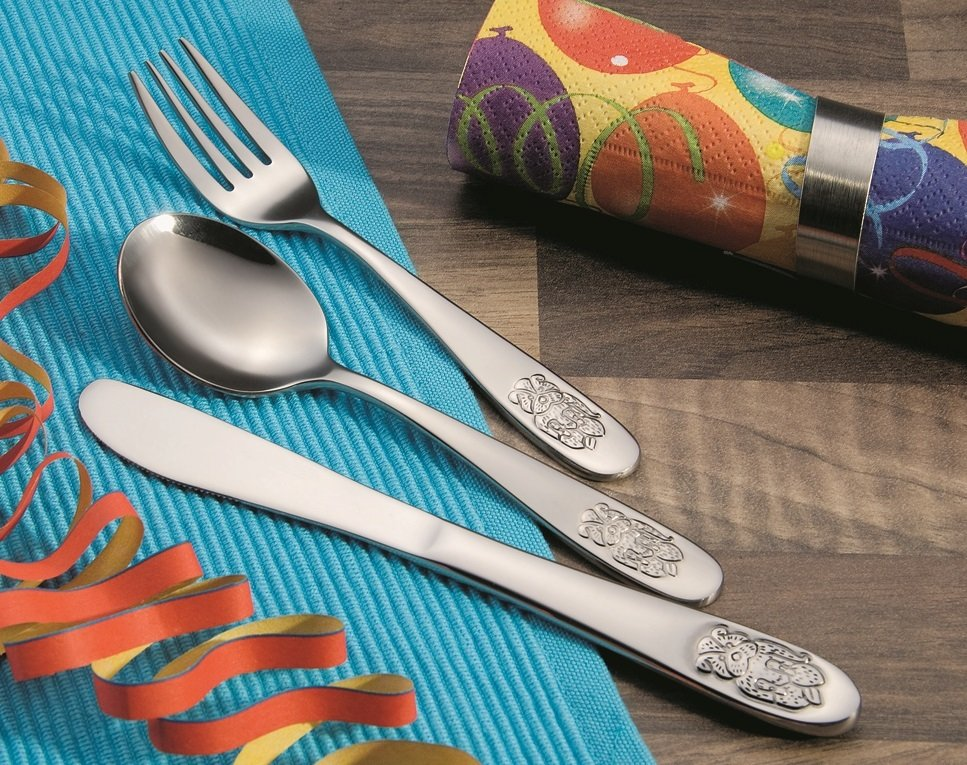

VIDEO
Įrankių el. parduotuvė Vilniuje ir Kaune - VISI ĮRANKIAI 2020.10.30 04:20
 Sveiki, Prisijungti
lietuvių kalba English lietuvių kalba Русский Susisiekite su mumis
Susisiekite dabar: +37062908727 El.paštas: eprekyba@visiirankiai.lt Krepšelis 0 Prekė Prekės Prekės 0,00 € Prekių nėra
Turi būti nustatyta Pristatymas 0,00 € Viso Pirkti
Jūsų paskyra Prekė sėkmingai pridėta į krepšelį Kiekis Viso Krepšelyje yra 0 prekė (-ės). Krepšelyje yra 1 prekė. Prekės viso Viso pristatymas Turi būti nustatyta Viso Tęsti apsipirkimą Pereiti prie apmokėjimo Menu Pradžia Naujos prekės Akcijos Išpardavimas Prekių katalogas Apie mus Paslaugos Nulūžusių žvakių išsukimas ir purkštukų išėmimas, ištraukimas Įrankių nuoma Taisyklės Kontaktai
Kategorijos Automobilių remonto įrankiai Įrankiai variklio remontui Pakaitinimo / uždegimo žvakių įrankiai Galvutės žvakėms Užlūžusių žvakių remontui Sriegiai, įvorės žvakėms Replės žvakėms Šepetėliai žvakėms Sriegikliai žvakėms su centravimu Raktai žvakėms Uždegimo ritės nuėmėjai Įrankiai purkštukams Galvutės purkštukams Purkštukų ištraukimui Frezos, raiberiai purkštukams Šepečiai purkštukams Inerciniai/atbuliniai plaktukai Variklio blokavimo įrankiai VAG, VW, SKODA blokatoriai BMW blokatoriai Ford, Volvo, Mazda blokatoriai Opel, Saab, Chevrolet blokatoriai Citroen, Peugeot, Mini (PSA) blokatoriai Renault, Nissan blokatoriai Alfa Romeo, Fiat, Lancia blokatoriai Mercedes-Benz blokatoriai Porsche blokatoriai Chrysler, Jeep, Land Rover, Jaguar blokatoriai Kiti blokatoriai / degimo nustatymo įrankiai Variklio cilindrų, vožtuvų, žiedų remonto įrankiai Įrankiai vožtuvams Įrankiai stumoklio žiedams Įrankiai riebokšliams Įrankiai honingavimui, šlifavimui Vidmačiai Mikrometrai Tepalinės Gramdikliai tarpinėms Liniuotės galvų plokštumai Smeigių (špilkų) išsukėjai Raktai dirželiui, vandens pompai, skriemuliui Įrankiai skriemuliui Įrankiai dirželiui, diržo įtempimui Įrankiai vandens pompai Įrankiai smagračiui Įrankiai elastiniems diržams Grandinės sujungimo / atskyrimo komplektai Kompresijos matuokliai, diagnostika, kiti testeriai varikliui Kompresiometrai benzinui Kompresiometrai dyzelinui Tepalo spaudimo matuokliai Kuro sistemos, sandarumo ir nuotekio testeriai Dyzelinių purkštukų diagnostika Tarpumačiai Kiti matuokliai (stetoskopai, termometrai, karbiuratoriams) Anglies dioksido CO2 testeriai Skysčių tankio matuokliai Degimo kampo nustatymui, stroboskopai Įrankiai degalų sistemai Įrankiai lambda zondui Replės žarnelėms Įrankiai kuro vamzdeliams Įrankiai kuro bakui, kuro filtrui Įrankiai kuro siurbliui Įrankiai tepalo filtrui Universalūs raktai, diržai, trikojai, grandinės Galvutės tepalo filtrui Galvų komplektai tepalo filtrams Tepalo išleidimui Galvutės, antgaliai Matuokliai tepalo lygiui Sugadintam karterio sriegiui Indai, talpos Įrankiai generatoriaus remontui Įrankiai aušinimo sistemai Žarnų užspaudimo įrankiai Spec. galvutės, raktai, antgaliai Endoskopai, kameros Įrankiai važiuoklės remontui Sankabos remonto įrankiai Suportų remonto įrankiai Stabdžių remonto, nuorinimo įrankiai Įrankiai vamzdeliams Vamzdelių valcavimui Vamzdelių lankstymui Vamzdelių pjovimui Raktai vamzdeliams su išpjova Spyruoklių suspaudimo įrankiai Įrankiai amortizatoriams Vairo traukių įrankiai Šarnyrų keitimo įrankiai Guolių, sailentblokų presavimo įrankiai Montiruotės / svertai Replės Įrankiai granatoms, pusašių gumoms, sąvaržos Ratų varžtams: galvutės, raktai, šepečiai Įrankiai ratų slapukams atsukti Diagnostika WALLMEK hidraulika Įrankiai kėbulo remontui Plaktukai kėbulo lyginimui Įrankiai kėbulo lyginimui Įrankiai apdailos ardymui Kaltai apdailai Tampymo, lankstymo prietaisai Stiklų, valytuvų montavimui Valytuvų nuėmimui Stiklų laikikliai Stiklų išpjovimui Atbuliniai plaktukai Plastmasės litavimas Grąžtai suvirinimo taškams Magnetai suvirinimo kampams Įranga autoservisams / autoremonto dirbtuvėms Ratų montavimo staklės Balansavimo staklės Hidrauliniai keltuvai automobiliams Darbastaliai Vežimėliai, įdėklai ir priedai Vežimėliai (įrankių spintos) Dėklai į vežimus (su įrankiais ir tušti) Priedai vežimėliams Vežimėliai su ratukais (su lentynomis) Grandininės-lyninės gervės, juostinės traukės Smėliasrovės, įrankiai smėliavimui Domkratai, stovai, rampos, transportavimo vežimėliai Domkratai hidrauliniai Domkratai pakopiniai Domkratai mechaniniai Stovai, atramos Platformos, rampos Domkratai su oro pagalvėmis Guminiai padai domkratams Automobilių transportavimo vežimėliai Pneumo-hidrauliniai domkratai Aksesuarai automobiliams Kojinės/rankinės pompos, antgaliai pompoms Laikikliai varikliams, greičių dėžių keltuvai, variklių kranai Kranai varikliui iškelti Stendai varikliui, vartytuvai Keltuvai greičių dėžėms Laikikliai varikliams, balansyrai Hidrauliniai presai Hidraulinės pompos Gultai, kėdutės Spintelės, stalviršiai, perforuotos sienelės Indukciniai kaitintuvai Autochemija Tepalo užpildymo/surinkimo įranga, talpos tepalams Įranga kondicionierių pildymui, priedai Žibintų reguliavimo įranga Kiti įrankiai autoservisams, priedai dirbtuvėms Indai eksploataciniams skysčiams, piltuvai, tepalinės Griebtuvai, magnetai, veidrodėliai Įvairūs matuokliai (dažų storio, padangų gylio, indikatoriai) Pompos alyvai/degalams, sifonai Švirkštai tepalams, alyvai Tvirtinimo dirželiai Magnetinės lėkštutės, magnetinės juostos Pincetai, griebtuvai Buksyrai, standžios vilktis, tempimo trosai Užvedimo laidai, paleidėjai (busteriai) Patalpų šildytuvai Įrankiai sunkvežimių remontui Raktai sunkvežimiams WALLMEK hidraulika Antgaliai, antgalių komplektai Galvutės sunkvežimiams Galvutės 6-kampės (dideli dydžiai) Galvutės 8-kampės (dideli dydžiai) Galvutės 12-kampės (dideli dydžiai) Reguliuojamos galvutės sunkvežimiams Padidintos jėgos raktai / reduktoriai ratams Sunkvežimių purkštukams Specializuotos galvutės sunkvežimiams Sunkvežimių važiuoklės remontui Sriegimo įrankiai sunkvežimiams Specializuotos replės sunkvežimiams Įrankiai motociklų remontui Įrankiai autoelektrikui Testeriai Šviestuvai, lempos, prožektoriai, Įkraunamos lempos, prožektoriai Lempos, šviestuvai su laidu Prožektoriai, žibintuvėliai su baterijomis Jungtys, izoliacinės juostos Elektriko replės Kontaktų montavimo įrankiai Elektriko peiliai Litavimo įrankiai Priemonės ratų montavimui - balansavimui Svareliai balansavimui Lopai padangoms, kaiščiai, virvės Ventiliai, ventilių išsukėjai Padangų remonto chemija Įrankiai padangų remontui Rinkiniai pradurtai padangai Matavimo įrankiai ratams Smūginiai padangų pripūtimo infliatoriai Dinamometrai, kampumačiai Dinamometriniai raktai Kampumačiai (varžto užspaudimo matuokliai) Įrankiai nuėmimui Dvikojai nuėmėjai Trikojai nuėmėjai Lygiagreūs nuėmėjai, atskyrėjai (pusmėnuliai) Guolių nuėmimo komplektai Kiti nuėmėjai Vidinių guolių nuėmėjai, ištraukėjai Rato stebulės, stabdžių bugno nuėmėjai Hidrauliniai varžtai Atbuliniai plaktukai nuėmikliams Duslintuvo remontui Tarpinės, sąvaržos, smeigės, kaiščiai ir kiti rinkiniai Sąvaržos WALLMEK hidraulika Rankiniai įrankiai Įrankių komplektai Kombinuoti įrankių komplektai (1/4“, 3/8“, 1/2“) 1/4“ įrankių komplektai 3/8“ įrankių komplektai 1/2“ įrankių komplektai 3/4“ ir 1“ įrankių komplektai Įrankių komplektai su priedais Kiauryminiai galvučių komplektai Terkšlės, rankenos, slankiojančios jungtys Terkšlės galvutėms Terkšlės vartomu galu Terkšlės teleskopinės Terkšlės sukama rankena Terkšlės mini Rankenos vartomu galu L-formos rankenos Rankenos su slankiojančia jungtimi Rankenėles galvutėms, antgaliams Terkšlių, rankenų remonto komplektai Prailgintuvai terkšlėms, perėjimai, adapteriai (laikikliai) Adapteriai, laikikliai antgaliams Prailgintuvai terkšlėms, rankenoms 1/4“ (6,3 MM) prailgintuvai 3/8” (10 MM) prailgintuvai 1/2” (12,5 MM) prailgintuvai 3/4 (20 MM) ir 1 (25 MM) prailgintuvai Lankstūs prailgintuvai Prailgintuvų komplektai Smūginiai (Cr-Mo) prailgintuvai Perėjimai galvutėms Smūginiai (Cr-Mo) perėjimai Paprasti (Cr-V) perėjimai Kardaninės jungtys, šarnyrai galvutėms Cr-Mo smūginiai Cr-V paprasti Galvutės, galvučių komplektai, laikikliai galvutėms Galvučių komplektai 1/4 (6,3 mm) galvučių komplektai 3/8“ (10 mm) galvučių komplektai 1/2 (12,5 mm) galvučių komplektai Smūginių galvučių komplektai E-profil‘io galvučių komplektai Colinių galvučių komplektai Galvutės šešiakampės 1/4 (6,3 mm) Šešiakampės galvutės 3/8” (10 mm) Šešiakampės galvutės 1/2 (12,5 mm) Šešiakampės galvutės 3/4 (20 mm) Šešiakampės galvutės 1” (25 mm) Šešiakampės galvutės Galvutės Cr-Mo, smūginės šešiakampės 1/4 (6,3 mm) Smūginės šešiakampės galvutės 1/2“ (12,5 mm) Trumpos smūginės šešiakampės galvutės 1/2 (12,5 mm) Ilgos smūginės šešiakampės galvutės 3/4“ (20 mm) Trumpos smūginės šešiakampės galvutės 3/4 (20 mm) Ilgos smūginės šešiakampės galvutės 1 (25 mm) Trumpos ir ilgos smūginės šešiakampės galvutės Smūginių šešiakampių galvučių komplektai Galvutės dvylikakampės 1/4 (6,3 mm) Dvylikakampės galvutės 3/8” (10 mm) Dvylikakampės galvutės 1/2 (12,5 mm) Dvylikakampės galvutės 3/4 (20 mm) Dvylikakampės galvutės 1” (25 mm) Dvylikakampės galvutės Galvutės Cr-Mo, smūginės dvylikakampės Ilgos smūginės dvylikakampės galvutės Trumpos smūginės dvylikakampės galvutės Smūginių dvylikakampių galvučių komplektai Galvutės VarioPlus daugiafunkcinės 1/4 (6,3mm) daugiafunkcinės galvutės 1/2 (12,5mm) daugiafunkcinės galvutės Galvutės E-profil (torx) 1/4 (6,3 mm) Galvutės E-profil (torx) 3/8” (10 mm) Galvutės E-profil (torx) 1/2” (12,5 mm) Galvutės E-profil (torx) Cr-mo smūginės galvutės E-profil (torx) Galvučių komplektai E-profil (torx) Galvutės sugadintiems varžtams Galvučių komplektai sugadintiems varžtams Galvutės sugadintiems varžtams-veržlėms po 1vnt. Galvutės vamzdinės Laikikliai galvutėms Antgaliai, antgalių komplektai, įpresuoti antgaliai Antgaliukai/bitukai 1/4 (6,3mm) Antgaliukai/bitukai 5/16 (8mm) Antgaliukai/bitukai 3/8 (10mm) Antgalių komplektai Įpresuoti TORX antgaliai 1/4 įpresuoti TORX antgaliai 3/8 įpresuoti TORX antgaliai 1/2 įpresuoti TORX antgaliai Įpresuoti SPLINE antgaliai Įpresuoti HEX (6-kampiai) antgaliai 1/4 įpresuoti HEX antgaliai 3/8 įpresuoti HEX antgaliai 1/2 įpresuoti HEX antgaliai Įpresuoti RIBE antgaliai Įpresuoti 5-kampiai (TS-TORX) antgaliai Įpresuotų antgalių komplektai Smūginiai Cr-Mo antgaliai SPLINE smūginiai antgaliai TORX smūginiai antgaliai HEX (6-kampiai) smūginiai antgaliai 1/2 RIBE smūginiai antgaliai 3/4 HEX ir SPLINE antgaliai 22mm smūginiai antgaliai Smūginių Cr-Mo antgalių komplektai Coliniai antgaliai Įpresuoti atsuktuvų antgaliai / PH+ PZ+ SL- Antgaliukų laikikliai suktukui Antgaliukų rinkiniai atsuktuvams (bitukai 6,3mm) Antgaliai su magnetinėmis galvutėmis Antgaliukų laikikliai terkšlei Coliniai įrankiai (raktai, galvutės, komplektai) Raktai, jų komplektai Kombinuoti raktai, jų komplektai Kombinuoti raktai / po 1 vnt. Kombinuoti raktai šešiakampe kilpa Kombinuotų raktų komplektai Dėklai raktams Dideli raktai, jų komplektai (nuo 34mm) Terkšliniai raktai, jų komplektai Tiesūs terkšliniai raktai Lankstomi terkšliniai raktai Trumpi terkšliniai raktai Reversiniai terkšliniai raktai, su perjungimu Terkšlinių raktų komplektai Vamzdiniai raktai, jų komplektai Spec. raktai Kilpiniai raktai, jų komplektai Trumpi raktai, jų komplektai Prailginti raktai, jų komplektai Lenkti S ir C tipo raktai, jų komplektai Raktai atviru galu, jų komplektai E-profil io raktai, jų komplektai Raktai vartomu galu, jų komplektai Coliniai raktai, jų komplektai Suvedami ir kabliniai raktai Raktai su išpjova (vamzdeliams), jų komplekai Atsuktuvai, jų komplektai. L ir T formos raktai Atsuktuvai, jų komplektai Plokšti atsuktuvai Kryžminiai atsuktuvai TORX atsuktuvai Kalami atsuktuvai Atsuktuvai su antgaliais Dvipusiai atsuktuvai Atsuktuvų komplektai Lankstūs atsuktuvai. Prailginti atsuktuvai, jų komplektai Smūginiai atsuktuvai Laikikliai atsuktuvams - dėklai L - formos TORX ir HEX raktai, jų komplektai L - formos TORX raktai L - formos HEX raktai L - formos TORX ir HEX raktų komplektai T - formos TORX ir HEX raktai, jų komplektai T - formos TORX raktai T - formos HEX raktai T - formos raktai su galvute Preciziniai atsuktuvai (maži dydžiai) Rankenos galvutėms, antgaliukams Replės, replių komplektai, žirklės skardai, specializuotos replės Replės-žirklės skardai (kirpimui, lankstymui) Replės fiksavimo žiedams Replių komplektai fiksavimo žiedams Replės fiksavimo žiedams po 1vnt. Replės reguliuojamos, santechninės replės COBRA Santechninės vamzdinės, reguliuojamos replės FIksuojamos, suspaudimo replės Replės precizinės MINI Replės universalios Replės šoninio kandimo, žnyplės trosui Replės prailgintos Kitos replės, specializuotos replės Replės/žnyplės varžtams Elektriko įrankiai Replės elektrikui Atsuktuvai elektrikui Elektriko testeriai, įvairūs matuokliai Replės / žnyplės užspaudimui elektrikui Elektriko peiliai Elektriko jungtys, izoliacinės juostos Kiti įrankiai elektrikui Spaustuvai (šaltkalvio, staliaus, C-formos) Šaltkalvio, sukinėjami C-formos spaustuvai Staliaus spaustuvai Mini spaustuvai Rankiniai spaustuvai Plaktukai, kūjai Plaktukai mediniu kotu Plaktukai plastikiniu kotu Kūjai Skardininko plaktukai Plastikiniai plaktukai Guminiai plaktukai Mūrininko plaktukai Stogdengio plaktukai Beinerciniai, neatšokantys plaktukai (Dead Blow Bumping Hammers) Plaktukai pastiprinti (3-komponenčiai) Išmušimo iškalimo įrankiai (kaltai, išmušikliai, žymekliai, centravimo įrankiai) Kaltai išmušimui Kaltai betonui Kaltai metalui Kaltai medžiui Skylių išmušėjai odai, plastikui, gumai Tekinimo kaltai Žymekliai (centravimo įrankiai) Kaltai skaičių ir raidžių iškalimui Kaltai skaičių iškalimui Kaltai raidžių iškalimui Matavimo priemonės (slankmačiai, ruletės, gulsčiukai, liniuotės) Liniuotės Slankmačiai Ruletės Gulsčiukai Virvės Lazeriai matuokliai Kampainiai, kampų matuokliai Mikrometrai Svarstyklės Kiti matuokliai Kniedikliai, srieginiai kniedikliai, kniedės Kniedikliai Kniedės Kniedikliai srieginėms kniedėms Srieginės kniedės Kniedikliai plastikinėms kniedėms + kniedės Žiedinės kniedės + replės Laužtuvai, svertai Patalpų remonto įrankiai (maišai, tentai, peiliukai, markeriai, izoliacinės juostos) Peiliukai tapetams, geležtės, peiliai Įrankiai plytelėms, stiklui, laminatui Maišytuvai Kelnės, glaistyklės Tentai Staliaus pieštukai, markeriai, techninės kreidos Dažymo, skaidrios, lipnios juostos Teptukai Žirklės kirpimui Maišai statybinėms šiukšlėms Kirviai, kalūnai Pjūklai Pjūklai medžiui Pjūklai metalui Pjūklai silikatiniam blokui Pjūklų geležtės Pjūklų dėžutės kampams Pjūklai gipso kartonui Įrankiai šveitimui Rankiniai šepečiai Šlifavimo blokai, tinkleliai Šlifavimo padai Kailiukai, kempinės Šlifavimo akmenukai Šepečiai gręžtuvui, šlif-pj.įrankiui Šlifavimo popierius Šlifavimo pasta Šlifavimo juostos Poliravimo antgaliai Dujiniai įrankiai Dujiniai degikliai Lituokliai Dujų balionėliai Dujinės viryklės Įrankiai santechnikui Gyvatukai (vamzdžių valymo spyralės) Raktai Vamzdžių pjovikliai Vamzdinės sriegpjovės Pistoletai silikonui, hermetikui, montavimo putoms Kabiamūšiai, kabės ir vinys Tvirtinimo diržai, spynos, padidinimo stiklai Spynos Spąstai Tvirtinimo diržai Pincetai Padidinimo stiklai Transportavimo vežimai Įrankių dėžės, smulkmenų dėžutės, kibirai Įrankių dėžės, diržai Įrankių dėžės su ratukais Kibirai Dėžutės smulkmenoms Dėžutės sandėliavimui Obliai, trintuvės Sodo-daržo įrankiai Medžio, metalo ir betono apdirbimo įrankiai Įrankiai sriegimui: sriegikliai, sriegpjovės, sriegmačiai Sriegiklių ir sriegpjovių komplektai Sriegikliai Sriegpjovės Sriegiklių ir sriegpjovių laikikliai Sriegmačiai - sriegio žingsnio matuokliai Sugadinto sriegio atstatymo komplektai, įvorės, indėklai Grąžtai, jų komplektai Grąžtai medžiui Spiraliniai grąžtai medžiui Plunksniniai grąžtai medžiui Sraigtiniai grąžtai medžiui Prailginti grąžtai medžiui Grąžtai komfirmatams Prailgintuvai grąžtams Grąžtai metalui Grąžtai metalui HSS / DIN338 Grąžtai metalui HSS-Cobalt / DIN338 Grąžtai metalui prailginti / DIN340 Grąžtai metalui su kietmetaliu Grąžtai metalui su nutekintu kotu Grąžtai betonui Grąžtai betonui SDS+ Grąžtai betonui SDS-MAX Grąžtai betonui cilindriniu tvirtinimu Adapteriai Grąžtai stiklui Grąžtai keramikai, plytelėms Grąžtų komplektai Grąžtų medžiui komplektai Grąžtų metalui komplektai Grąžtų betonui komplektai Grąžtų komplektai su šešiakampiu (HEX) tvirtinimu Grąžtai suvirinimo taškams Grąžtai granitui Kiti grąžtai, rankiniai gręžtuvai Gręžimo karūnos, jų komplektai Gręžimo karūnos metalui, medžiui Gręžimo karūnos betonui, mūrui Deimantinės gręžimo karūnos Volframinės gręžimo karūnos Gręžimo karūnų komplektai Adapteriai gręžimo karūnoms Pakopiniai grąžtai, jų komplektai Pakopiniai grąžtai Pakopinių grąžtų komplektai Grąžtų galąstuvai, tepalai gręžimui palengvinti Įrankiai nulaužtų varžtų išsukimui, veržlių nukandimui Nulaužtų varžtų išsukimo įrankiai Sugadintų varžtų ir veržlių nupjovėjai Smeigių išsukimo įrankiai Medžio ir metalo frezos, jų komplektai Metalo frezos Medžio frezos Medžio frezų komplektai Preciziniai komplektai medžiagų apdirbimui Dildės, jų komplektai Metalo dildės Medžio dildės Pjovimo, šlifavimo diskai Metalo pjovimo diskai Betono pjovimo diskai Medžio pjovimo diskai Šlifavimo, šveitimo diskai Žiedlapiniai diskai Pjovimo diskai staklėms Geležtės siaurapjūkliui, tiesiniam pjūklui Geležtės metalui Geležtės medžiui Geležčių komplektai Geležtės betonui Daugiafunkcinio įrankio peiliukai, priedai Kaltai betonui SDS+ / SDS-MAX/PH65 Kaltai betonui SDS-PLUS (SDS+) Kaltai betonui SDS-MAX Rankiniai kaltai betonui Kaltai Betonui PH65 Staklės metalo apdirbimui Pneumatika Pneumatiniai įrankiai Pneumatiniai veržliasukiai Pneumo rankenos, terkšles Pneumatiniai šlifuokliai, jų priedai Pneumatiniai pjūklai, pjovikliai Pneumatiniai kaltai, plaktukai Pneumatiniai gręžtuvai, suktuvai Pneumatiniai kabiamušiai, viniakalės Pistoletai dažymui Pistoletai prapūtimui Pistoletai padangų pūtimui Valcavimo įrankiai, skylamušiai Pistoletai graviteksui Praplovimo, valymo pistoletai Pneumatikos priedai Pneumo - Kabės ir vinys Pneumatinės oro žarnos Pneumatinės jungtys Tepalai pneumatikai Oro srauto reguliatoriai, tepalinės, drėgmės surinkėjai Kompresoriai Elektriniai įrankiai Gręžtuvai / suktuvai / perforatoriai Gręžtuvai Priedai gręžtuvams Akumuliatoriniai suktuvai-gręžtuvai 1/2 smūginiai akumuliatoriniai veržliasūkiai Smūginiai gręžtuvai (perforatoriai) Šlifuokliai-poliruokliai Kampiniai šlifuokliai Poliruokliai Šlifuokliai Daugiafunkciniai įrankiai ir priedai Suvirinimo įranga Stovai-laikikliai grežimo šablonai Telferiai Pjūklai-siaurapjūkliai Techniniai fenai El. veržliasūkiai Pompos/siurbliai skysčiams Įkrovikliai akumuliatoriams Kompresoriukai padangoms 12V Dulkių siurbliai Maišyklės Lituokliai ir priedai Klijų pistoletai ir klijai Elektros prailgintuvai Apšvietimas, lempos Lempos įkraunamos Lempos su baterijomis, neįkraunamos Lempos su laidu Šviestuvai, lempos patalpoms Elektinės tempimo gervės Tekinimo staklės Patalpų šildytuvai / elektriniai, dyzeliniai Darbo rūbai, darbo saugos priemonės Darbo batai Darbo drabužiai Darbinės kelnės Darbiniai švarkai Darbiniai puskombinezoniai Darbinės striukės Darbinės liemenės Darbiniai termo drabužiai Darbiniai džemperiai Kepurės Darbinės kojinės Padidinto matomumo darbo rūbai Darbiniai marškinėliai Darbo pirštinės Vienkartinės darbo pirštinės Tekstilinės darbo pirštinės Aplietos darbo pirštinės Odinės darbo pirštinės Suvirinimo pirštinės Darbo šalmai Apsauginiai akiniai Apsauginės ausinės Veido apsauga Kvėpavimo takų apsauga (respiratoriai) Antkeliai Rankšluostinis popierius Raktų pakabukai Įspėjamieji ženklai Sanitarinės-higieninės prekės. Pleistrai. Rankų plovimo pastos Įrankių nuoma Įrankių nuoma: variklio blokavimui (degimo nustatymui) Įrankių nuoma: guolių, sailentblokų presavimui, montavimui Dovanų idėjos vyrams Dovanų kuponai Išpardavimas
Informacija
Apie mus Kontaktai Taisyklės
Gamintojai
Condor Werkzeug (Vokietija) TRIUMF professional tools (Slovakija) Hogert technik (Vokietija) ERBA (Austrija) Avtodelo (Rusija) LEMAN (Prancūzija) Naujai gautos prekės Akcijos
New arrivals 13,00 € Yra sandėlyje E-kaina Nauja Kokybiškos nitrilinės pirštinės XL(10) dydis / 50vnt / prailgintos Kodas: 55206 Vienkartinės nitrilinės darbinės pirštinės XL (10) dydis / be pudros / 50vnt. / prailgintos
13,00 € Į krepšelį Daugiau Yra sandėlyje 16,00 € Yra sandėlyje E-kaina Nauja Vienkartinės nitrilo pirštinės be pudros / 100vnt. / M dydis Kodas: NITRIL-M Vienkartinės, darbinės nitrilinės apsauginės pirštinės be pudros EN420 / M dydis / 100vnt.
16,00 € Į krepšelį Daugiau Yra sandėlyje 16,50 € Yra sandėlyje E-kaina Nauja Vienkartinės nitrilo pirštinės be pudros / 100vnt. / L dydis Kodas: NITRIL-L Vienkartinės, darbinės nitrilinės apsauginės pirštinės be pudros / L dydžio / 100vnt.
16,50 € Į krepšelį Daugiau Yra sandėlyje 15,90 € Yra sandėlyje E-kaina Nauja Vienkartinės nitrilo pirštinės 100vnt. / S dydis Kodas: NITRIL-S Vienkartinės, darbinės nitrilinės apsauginės pirštinės be pudros EN420 / S dydis / 100vnt.
15,90 € Į krepšelį Daugiau Yra sandėlyje 8,77 € Yra sandėlyje E-kaina Nauja Krapštukų-ylų komplektas / 9dalių Kodas: CH32949 Krapštukų-ylų-adatų komplektas / 9dalių
8,77 € Į krepšelį Daugiau Yra sandėlyje 111,84 € Yra sandėlyje E-kaina Nauja Pneumatinis tepalo užpylimo-išsiurbimo komplektas / ATF adapteriai Kodas: CH3996 Pneumatinis tepalo užpylimo ir išsiurbimo įrenginys su ATF adapteriais greičių dėžei / talpa 8 L
111,84 € Į krepšelį Daugiau Yra sandėlyje 11,37 € Yra sandėlyje E-kaina Nauja Galva 3/4 65mm 6-kampė Kodas: CH3465 Galvutė 65mm šešiakampė 3/4 (20mm) lizdu
11,37 € Į krepšelį Daugiau Yra sandėlyje 26,49 € Yra sandėlyje E-kaina Nauja Variklio blokavimo komplektas VAG 2,4/3,2/4,2 FSI Kodas: CH6632 Variklio fiksavimo komplektas VAG 2,4/3,2/4,2 FSI / degimo nustatymo
26,49 € Į krepšelį Daugiau Yra sandėlyje Visos naujos prekės
Akcijos 5,00 € 9,80 € Yra sandėlyje E-kaina Akcija! Grąžtas pakopinis metalui 4-20mm Kodas: C0443/2 Grąžtas pakopinis metalui 4-20mm
5,00 € 9,80 € Į krepšelį Daugiau Yra sandėlyje 479,00 € 630,00 € Yra sandėlyje E-kaina Akcija! Įrankių vežimėlis su 149 įrankiais / 7 stalčių Kodas: C7029/S02 Įrankių spintelė su 149 įrankiais / 7 stalčių
479,00 € 630,00 € Į krepšelį Daugiau Yra sandėlyje 755,00 € 995,00 € Išparduota E-kaina Akcija! Įrankių vežimėlis su 265 įrankiais / 7 stalčių Kodas: C7029/M02 Įrankių spintelė su 265 įrankiais / 7 stalčių
755,00 € 995,00 € Į krepšelį Daugiau Išparduota 835,00 € 1 095,00 € Yra sandėlyje E-kaina Akcija! Įrankių vežimėlis su 294 įrankiais / 7 stalčių Kodas: C7029/L02 Įrankių spintelė su 294 įrankiais / 7 stalčių
835,00 € 1 095,00 € Į krepšelį Daugiau Yra sandėlyje 550,00 € 725,00 € Išparduota E-kaina Akcija! Įrankių vežimėlis su 187 įrankiais / 7 stalčių Kodas: C7029/S01 Įrankių spintelė su 187 įrankiais / 7 stalčių
550,00 € 725,00 € Į krepšelį Daugiau Išparduota 500,00 € 649,92 € Išparduota E-kaina Indukcinis kaitintuvas 1,75Kw Kodas: C9290 Indukcinis kaitintuvas 1,75Kw
500,00 € 649,92 € Į krepšelį Daugiau Sumažinta kaina! Išparduota 1 350,00 € 1 670,00 € Yra sandėlyje E-kaina 2 KOLONŲ ELEKTROHIDRAULINIS KELTUVAS / 4000kg Kodas: JH-4000C Dviejų kolonų elektrohidraulinis 4tonų keltuvas / 4000kg
1 350,00 € 1 670,00 € Į krepšelį Daugiau Sumažinta kaina! Pristatymas gali užtrukti ilgiau nei įprastai 990,00 € 1 300,00 € Išparduota E-kaina Akcija! Įrankių vežimėlis su 265 įrankiais / 8 stalčių Kodas: C7000/M02 Įrankių spintelė su 265 įrankiais / 8 stalčių / XCESS
990,00 € 1 300,00 € Į krepšelį Daugiau Išparduota Mūsų teikiamos paslaugos: Didmeninė ir mažmeninė prekyba įrankiais Įrankių nuoma (variklio fiksavimui / degimo nustatymui) Žvakių ir purkštukų išėmimas Nulūžusių varžtų išsukimas, sriegio taisymas
Teminiai gamintojai icon
Greitas pristatymas Pristatysime kaip įmanoma greičiau
icon
Prekių grąžinimas 14 dienų grąžinimo garantija
icon
Pagalba Visada galite pasikonsultuoti su pardavėju
icon
Saugūs atsiskaitymai Apmokėkite per Paysera
Sekite mus Facebook Facebook
Mūsų pasiūlymas Išpardavimas Naujos prekės Geriausiai parduodamos
Informacija Apie mus Kontaktai Taisyklės Paslaugos
Mano paskyra Mano užsakymai Mano suteiktos nuolaidos Mano adresai Mano asmeninė informacija Mano kuponai
Susisiekite su mumis VILNIUS
+37068641344
KAUNAS
DIDMENINĖ PREKYBA:
Naujienlaiškiai
Makita įrankiai - verkter Įrankiai | Darbo įrankiai | Senukai.lt ĮRANKIAI | Makita, Festool, Metabo, Bosch, DeWalt ... Įrankių komplektai, darbo įrankiai Internetu - GTI.LT Įrankiai - Apis LT Įrankiai :: Mažmeninė ir didmeninė prekyba visų rūšių ... Elektriniai įrankiai - Gitana.lt Įrankiai Liudo įrankiai Įrankių el. parduotuvė Vilniuje ir Kaune - VISI ĮRANKIAI
Last Photo